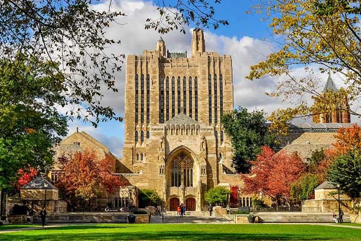
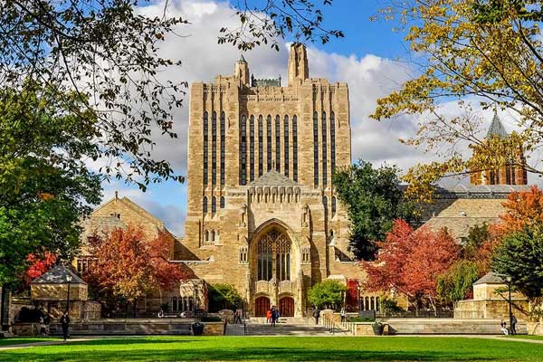

Йельский университет - это частный исследовательский университет Лиги плюща, который является третьим по возрасту высшим учебным заведением в США.
Йельский университет ведет свою историю с 1701 года, когда он был основан как Коллегиальная школа в Сейбруке, штат Коннектикут, которая 15 лет спустя переехала в Нью-Хейвен.
В 1718 году он был переименован в Йельский колледж в честь валлийского мецената Элиху Йеля, а в 1861 году он стал первым университетом в США, где была присвоена степень доктора философии.
Центральный кампус Йельского университета занимает 260 акров в Нью-Хейвене и включает здания, построенные в середине 18-го века.
Университет состоит из 14 школ, и студенты изучают гуманитарные науки и искусства, естественные и социальные науки, прежде чем выбрать специализацию. Студентов также обучают навыкам письма, количественному анализу и иностранным языкам.
Необычно для США, что студенты Йельского университета проживают в колледжах по образцу университетов Оксфорда и Кембриджа. В университете 12 исторических колледжей, а в 2014 году началось строительство еще двух.
Примерно каждый пятый студент - иностранный, и более половины всех студентов получают стипендии или гранты от университета.
Эндаумент Йельского университета превышает 25 миллиардов долларов (17,3 миллиарда фунтов стерлингов), что делает его вторым по величине учебным заведением в мире, а библиотека, насчитывающая более 15 миллионов томов, является третьей по величине в США.
Выпускники Йельского университета и спортивные команды известны как "бульдоги", а многие выпускники Йельского университета сделали заметную карьеру в политике, искусстве и науке.
Четыре выпускника Йеля подписали американскую Декларацию независимости, а университет дал образование пяти президентам США: Уильям Говард Тафт, Джеральд Форд, Джордж Буш-старший, Билл Клинтон и Джордж Буш-старший. Двадцать выпускников Йельского университета получили Нобелевские премии, включая экономиста Пола Кругмана, а 32 выпускника получили Пулитцеровскую премию.
Среди других известных выпускников - госсекретари США Хиллари Клинтон и Джон Керри, а также актриса Мерил Стрип.
Кампус Йельского университета включает в себя множество известных зданий, таких как Библиотека редких книг и рукописей Бейнеке, Музей естественной истории Пибоди и Мемориальная библиотека Стерлинга.
Нью-Хейвен - город с населением около 130 000 человек, расположенный в двух с половиной часах езды к югу от Бостона и в полутора часах езды к северу от Нью-Йорка. В городе много магазинов, музеев и ресторанов, рядом находятся пляжи, пешеходные тропы и исторические достопримечательности.
 

United States
Yale University

New Haven, Connecticut, 06520, United States